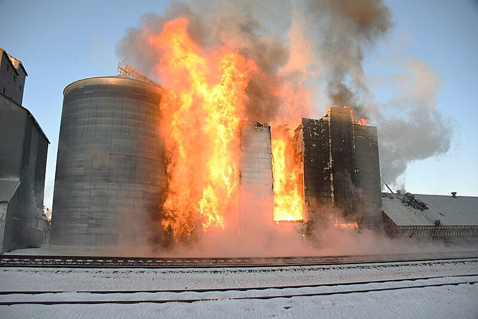

Veja como podemos
Proteger o seu armazenamento
Osiris: Inovação e Segurança para o Agronegócio
A Osiris é uma empresa de tecnologia dedicada a impulsionar a segurança e a eficiência no agronegócio. Com foco em soluções inovadoras, desenvolvemos sistemas de monitoramento inteligentes para proteger o seu investimento, a sua produção e, acima de tudo, vidas. Nossa missão é oferecer tranquilidade aos produtores rurais, garantindo ambientes de armazenamento de grãos mais seguros e produtivos através da detecção precoce de riscos.Por que o Metano é uma Ameaça em Silos de Soja?
O gás metano CH-4 é um subproduto natural da decomposição de matéria orgânica, incluindo grãos armazenados em silos. Embora inodoro e incolor, sua presença em concentrações elevadas é extremamente perigosa:
- Risco de Explosão: O metano é um gás altamente inflamável. Em ambientes fechados, como silos, o acúmulo pode levar a explosões devastadoras, causando perdas materiais e, tragicamente, humanas.
- Asfixia e Intoxicação: Em altas concentrações, o metano desloca o oxigênio, criando um ambiente anóxico. Isso pode levar à asfixia para trabalhadores que adentrem o silo sem o equipamento de proteção adequado.
- Danos à Qualidade dos Grãos: A decomposição que libera metano também pode indicar deterioração dos grãos, comprometendo a qualidade e gerando perdas significativas na safra armazenada.
- Impacto Ambiental: O metano é um potente gás de efeito estufa. Monitorar e mitigar seu vazamento contribui para práticas agrícolas mais sustentáveis.
A Osiris oferece a solução para mitigar esses riscos, transformando seu silo em um ambiente mais seguro e produtivo.

Veja como podemos
Proteger o seu armazenamento
Monitoramento
 Sensores instalados no ambiente detectam a presença de metano no ar em tempo
real.
Sensores instalados no ambiente detectam a presença de metano no ar em tempo
real.
Coleta de dados
 As informações captadas pelos sensores são processadas
automaticamente.
As informações captadas pelos sensores são processadas
automaticamente.
Alerta imediato
 Quando os níveis de gás ultrapassam o limite seguro, um alerta é emitido ao
responsável.
Quando os níveis de gás ultrapassam o limite seguro, um alerta é emitido ao
responsável.
Acompanhamento
 Os dados ficam disponíveis em um painel visual, facilitando a tomada de
decisões.
Os dados ficam disponíveis em um painel visual, facilitando a tomada de
decisões.
Benefícios do sistema Osiris
Segurança
Reduz riscos de explosões e intoxicações causadas pelo acúmulo de metano.Qualidade
Eficiência
Dados em tempo real